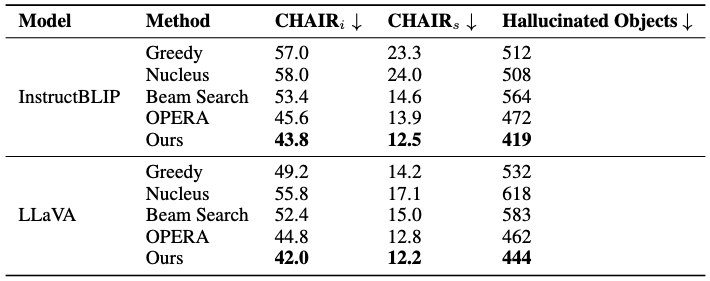
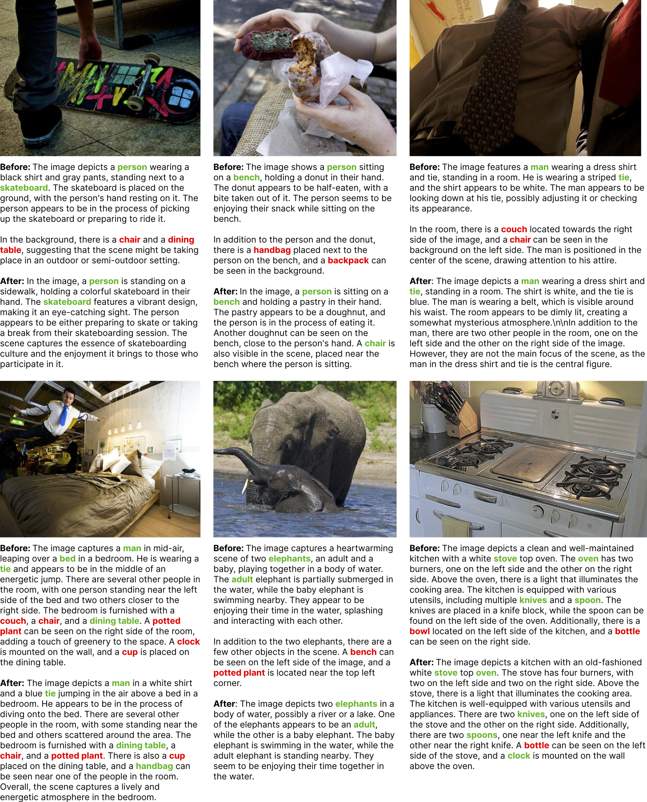
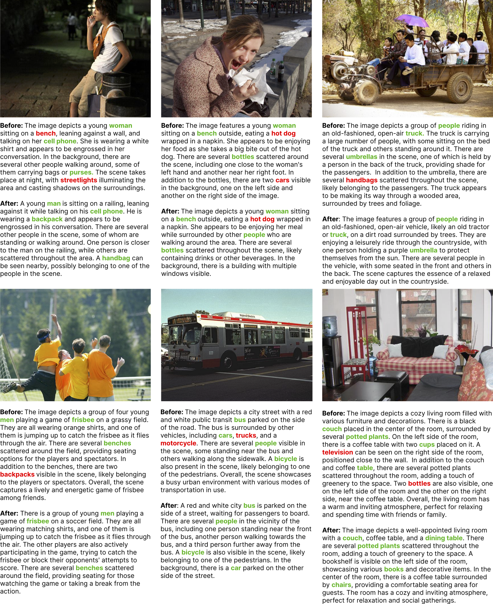
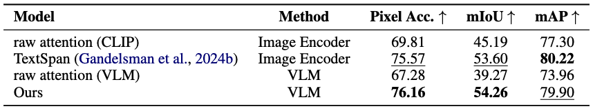
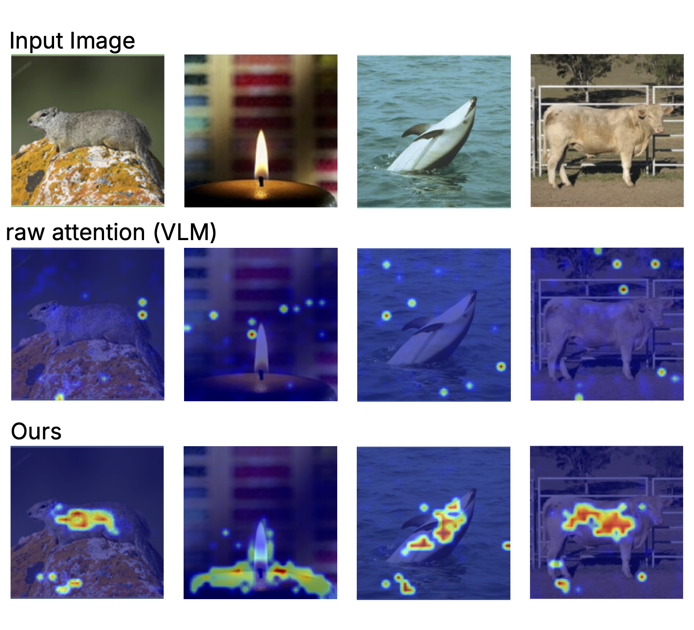

Interpreting VLM internal image representations. (a) Given a VLM, (b) we unembed the latent representations from image embeddings to the vocabulary and classify hallucinations. We remove hallucinations by (c) linearly editing them out of the latent representations.
We investigate the internal representations of vision-language models (VLMs) to address hallucinations, a persistent challenge despite advances in model size and training. We project VLMs' internal image representations to their language vocabulary and identify differences in token output probabilities between real and hallucinated objects. We additionally use these output probabilities to spatially localize real objects. Building on this approach, we introduce a knowledge erasure algorithm that removes hallucinations by linearly orthogonalizing image features with respect to hallucinated object features. We show that targeted edits to a model's latent representations can reduce hallucinations by up to 25.7% on the COCO2014 dataset while preserving performance. Our findings demonstrate how a deeper understanding of VLMs' latent representations can enhance reliability and enable novel capabilities, such as zero-shot segmentation.
We apply the logit lens to probe the language model as it processes the image representations in two VLMs, InstructBLIP and LLaVA. This enables us to interpret the image features’ output distributions as they are transformed by the layers of the language model and localize objects spatially within the image. For an input embedding $t_m$, given its hidden representation $h_l(t_m)$ and the language model's unembedding matrix $W_U$, we obtain the logits output by the language model at layer $l$ as follows:
$$f_l(t_{m}) = W_U \cdot h_l(t_m) = [\text{logit}_1, \text{logit}_2, \text{logit}_3, \ldots, \text{logit}_{|V|}]$$
The logits from the layer can be decomposed further for a specific object $o$ to find the maximum probability of that object over all intermediate representations of image embeddings $k_i$ over all layers $l$:
$$c_o = \max_{\substack{1 \leq l \leq L \\ 1 \leq i \leq n}} \{\text{softmax}(f_l(k_i))_o\}$$
We define $c_o$ as the VLMs internal confidence of an object $o$ existing in the image: the highest probability of object presence across $n$ image representations through $L$ layers of the language model.
Localizing objects using internal confidence values. We find the probabilities of objects through layers of the language model for every image embedding in LLaVA. We use the highest layer probability per image embedding to localize an object within the image.
Recognizing that image embeddings are directly interpretable, we edit these embeddings to erase the presence of objects from image captions. We propose a linear editing algorithm that subtracts the text embedding of a target object from all image embeddings. When applied on singular and multiple object removals, we find that it erases hallucinated objects more effectively than correctly detected (CD) objects (i.e. real objects that the model correctly detects).
ProjectAway: Our editing algorithm erases the presence of an object from image embeddings by orthogonalizing them with respect to the object's text embedding.
We apply ProjectAway for both individually removing objects and mass-removing objects.
When mass-removing hallucinations identified with ground truth annotations, we achieve a hallucination reduction rate of 41.3% for InstructBLIP and 23.3% for LLaVA. We similarly find that it can successfully remove correctly detected (CD) objects when edited together in a single image.
Removing mentioned objects individually and in-mass.
Using ProjectAway, we remove hallucinated objects and observe high hallucination reduction with CHAIR, mass-removal rate (Mass RR), and individual removal rate (Individual RR). We also remove correctly detected (CD) objects but find that they are more resistant to linear editing.
Denote CHAIRS as $C_S$ and CHAIRI as $C_I$.
Qualitative results for mass object removal.
We present example images and their captions after mass-removing hallucinations (red) with ProjectAway, which can effectively remove hallucinations while preserving, even increasing, correctly detected objects (green).
Using these observations, we utilize the internal confidence $c_o$ value to classify object presence, since the internal confidence for objects that are not present in the image, or hallucinated, are lower within the image representations. We find that utilizing internal confidence to classify object hallucinations provides a 47.17% improvement in mAP in InstructBLIP and 22.45% in LLaVA over the baseline of using the model's output logits directly as a measure of confidence.
We use the mass editing technique to remove hallucinations we detected. Evaluating against standard beam search generation, greedy generation, nucleus sampling, and OPERA, we find that our method of mass hallucination removal is more effective at reducing hallucinations while preserving the original caption.
Hallucination intervention performance. We mass-remove hallucinations that we detect and outperform other baselines. We observe a considerable drop in the raw count of hallucinated objects.
Qualitative results for LLaVA hallucination intervention. Our algorithm removes hallucinations and, at times, adds correctly detected objects.
Qualitative results for InstructBLIP hallucination intervention.
We utilize the internal confidence per image feature for zero-shot image segmentation. This application leverages the spatial information encoded in the image representations and demonstrates how VLMs internally represent and localize objects within images.
Segmentation Performance on ImageNet-segmentation. Localizing objects using their probabilities within the image representations results in more accurate zero-shot segmentation than previous vision-encoders-based and VLM-based methods.
Zero-shot segmentation. Warmer areas indicate higher internal confidence for the class at that image patch. We binarize these values with a threshold to generate segmentations.
We thank Kayo Yin for her comments and feedback on our paper. YG is supported by the Google Fellowship. Authors, as part of their affiliation with UC Berkeley, were supported in part by the the Berkeley Artificial Intelligence Research (BAIR) commons program.